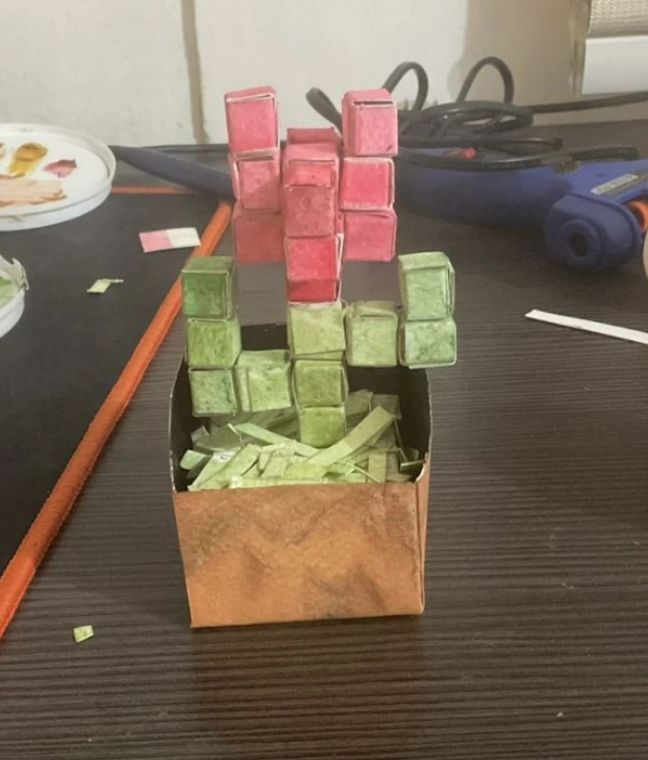
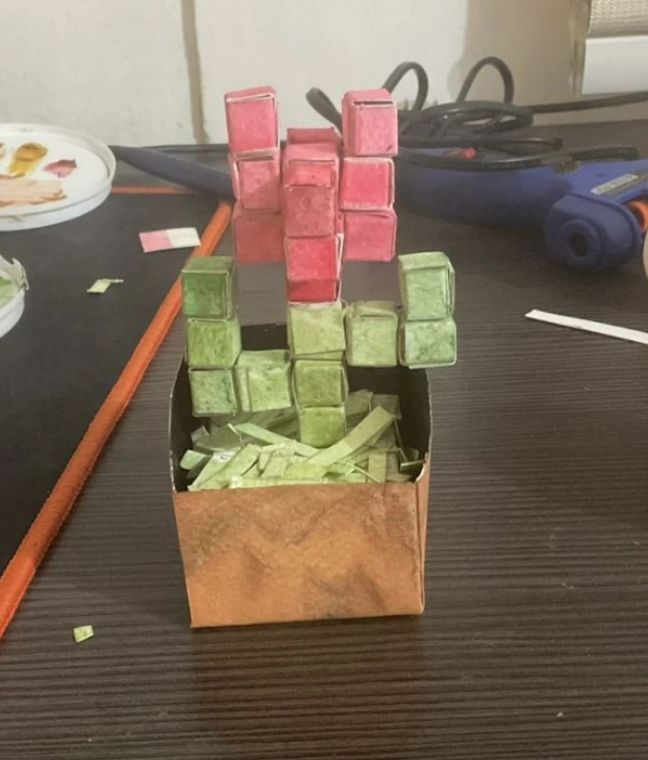
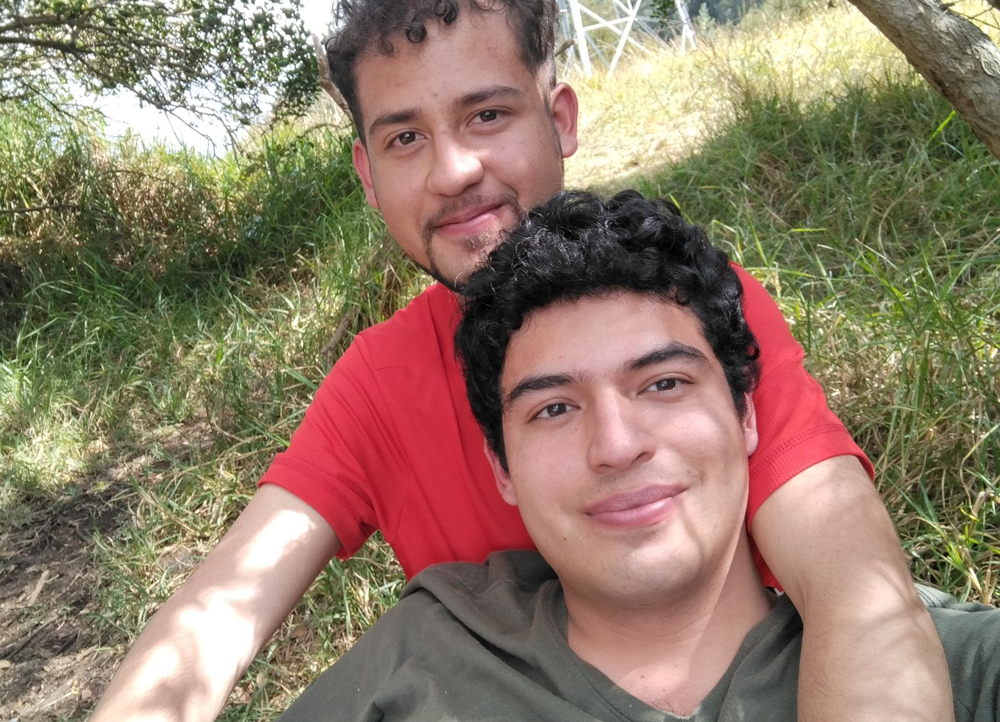
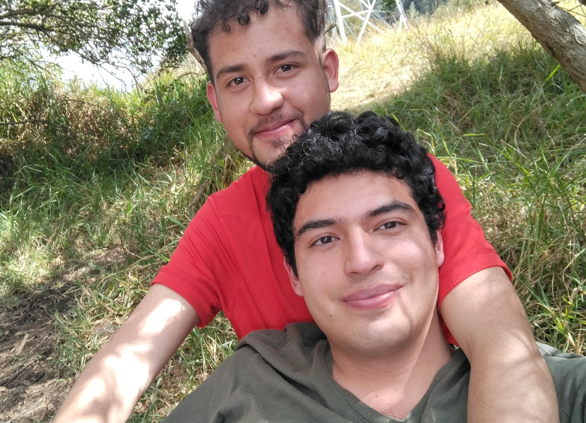
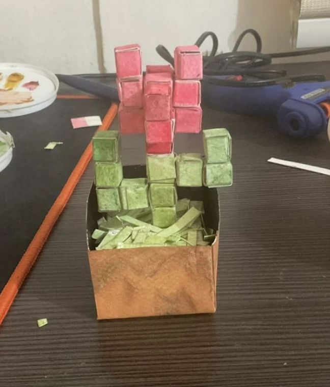
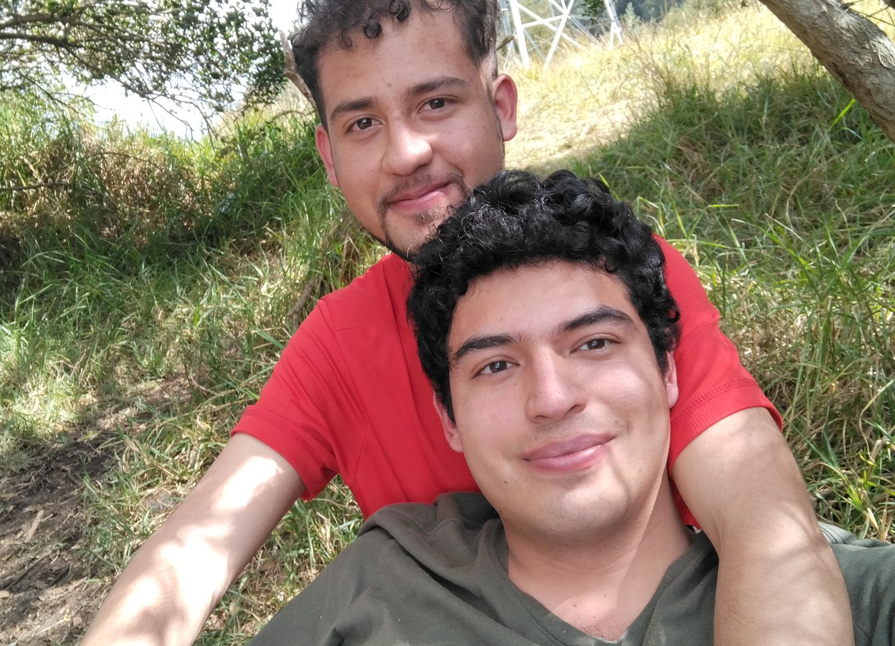

Nuestro collage
 



 


Tócalas despacio, cada una representa los días mas felices de los últimos tiempos, los días en los que tuve la fortuna de conocerte 🤍
⬇️
Desliza lento… Toca el corazón y empieza a leer te hice especialmente este diseño programando en html, aprendí solo para ti, porque puede que estemos lejos de alguna manera, pero siempre puedo encontrar maneras para darte regalitos y consentirte con mis detalles, mi amor, el hombre de mi vida, siempre hay maneras, y si no existen, las voy a descubrir, las voy a aprender, pero siempre siempre haré lo que esté en mis manos para sacarte un montón de sonrisas.
Aunque estemos separados, mi corazón no sabría dejar de latir por ti, aunque algunas veces tengamos que hablar sobre cosas incómodas, nunca, pero nunca jamás, dejaría de amarte, por mi novio hago lo que sea, siempre quisiera poderte cuidar, que vivieras dentro de mi pecho, para escuchar estos latidos que nunca cesarán, que me mantienen tan vivo como tu amor.
Llegaste suave a mi existencia, sin ruido, y te quedaste profundo. A veces pienso que eres como un gran arbol, sabio, que me enseña calma y paciencia, que me sostiene y me cobija de las tormentas, algo tan simple como un gato que se acomoda en el pecho, pero que te calienta el alma, que te acompaña, como un koala que recuerda ternura, que recuerda la calidez de esos abrazos llenos de amor que me das. Este espacio existe porque hay abrazos que necesitan palabras. Porque hay amores que merecen páginas. Porque tú mereces un rincón hecho solo para ti. Gracias por quedarte. Gracias por cuidarme. Gracias por ser mi hogar. Gracias por amarme, mi ratoncito.


Tócalas despacio, cada una representa los días mas felices de los últimos tiempos, los días en los que tuve la fortuna de conocerte 🤍
No importa cuántos kilómetros haya entre nosotros. Mi corazón sabrá cómo llegar hasta ti, cómo cruzarse en tu camino. Te espero. lo siguiente no es un recurso cursi y tonto que recuerda a otras cosas, es una declaración de intenciones, un recordatorio de que eres mi todo, principe, ratoncito, mi wiwiwi, mi tonto, mi amante, mi novioooooo, mi marido, ojalá el hombre con el que pueda pasar el resto de mis días, el único que puede penetrar en mi corazón y alma de esta manera.
Si llegaste hasta aquí es porque recorriste toda la carta completaaaaaa yeiiiiii!!!. Solo quería decirte que te amo en los días fáciles y en los difíciles, en la distancia y en la cercanía. Gracias por ser mi persona. Por ser mi novio, por ser mi mejor amigo, por ser mi compañero de vida, por ser mi amor, por ser tú, solo tú, el único que amo y amaré siempre. Puede que algunas veces a mi cabeza le cuesten cosas, que no siempre estaremos de acuerdo o sea bonito, pero necesito que entiendas que la voluntad que tengo para ser tu compañero y amarte, repetarte y consentirte, no están en duda en ningún momento, sé que soy dificil algunas veces, pero intento ser mejor cada día, porque mi novio es tan maravilloso que necesito corresponderle con la mejor versión de mi mismo, en las buenas y en las malas, en la salud y en la enfermedad...